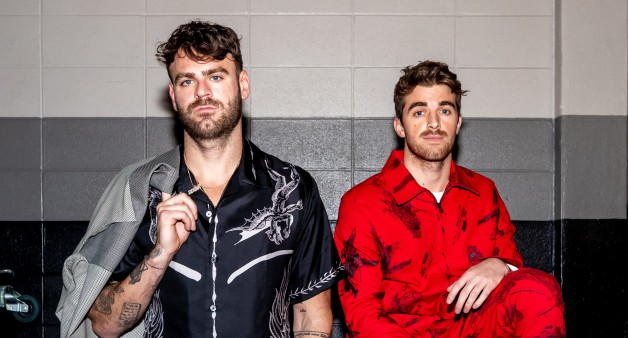
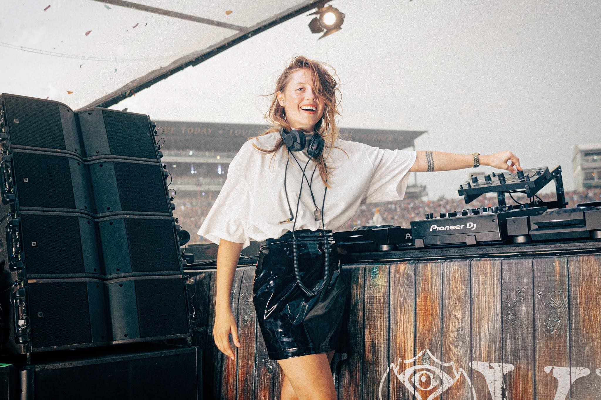
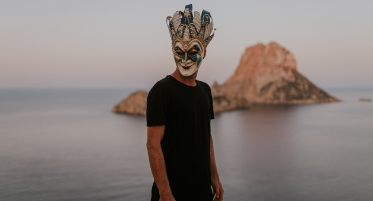
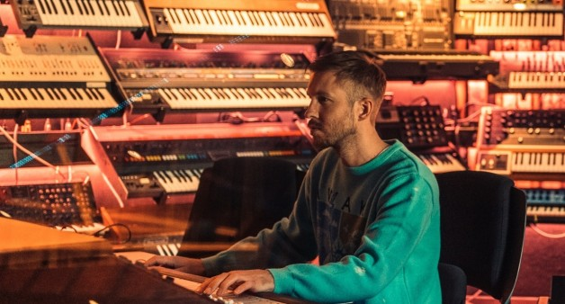
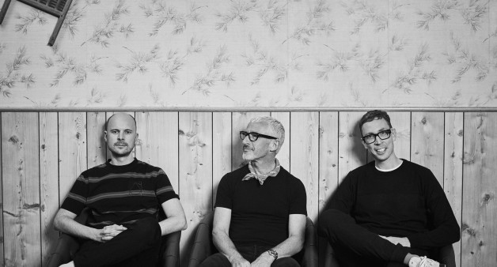
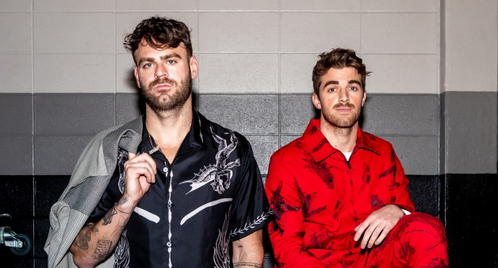
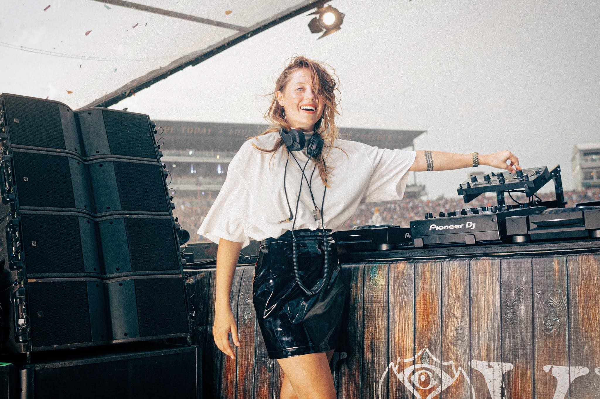
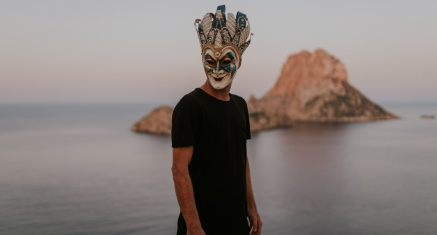
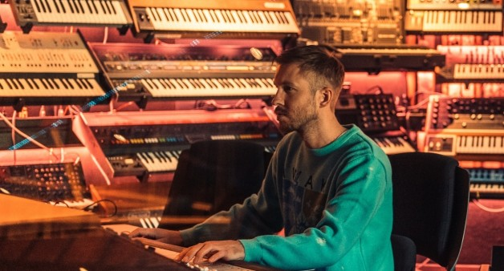
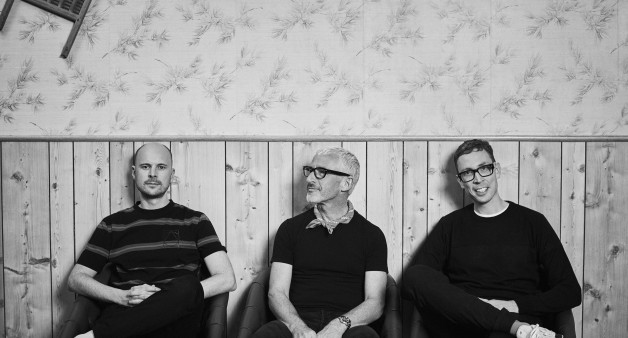

Artistas
DJ Mag es una revista británica, especializada en la música electrónica y sus DJ. Está dirigida a productores, aspirantes a DJ, promotores y amantes del EDM, en general, siendo sin duda una de las publicaciones que más fomenta el conocimiento de la escena de este género musical en el mundo.
Da a conocer entrevistas, evaluaciones de nuevo material, tecnología para DJ y temas sobre el dance en general. Es conocida por la votación de los 100 DJ más populares de música dance de cada año (Top 100 DJ Poll) que se realiza desde 1997 a través de una encuesta en línea. Además publica una encuesta similar sobre los clubs más populares a nivel mundial de cada año. El actual ganador del 'Top 100 DJs' es el dj y productor francés David Guetta, y del 'Top 100 Clubs' es Green Valley por dos años consecutivos.
Además, esta revista ofrece conciertos y actuaciones de DJs de gran nivel en directo a menudo, retransmitiéndolos en su página web, o subiéndolos posteriormente a YouTube u otras redes. Los resultados de las encuestas se dan en el Ámsterdam Music Festival, por celebrarse a mediados de Octubre en el Ámsterdam Arena.
Top 100 DJs 2020
- David Guetta
- Dimitri Vegas & Like Mike
- Martin Garrix
- Armin van Buuren
- Alok
- Don Diablo
- Afrojack
- Oliver Heldens
- Steve Aoki
- Timmy Trumpet
- Marshmello
- Alan Walker
- R3hab
- W&W
- Skrillex
- Tiësto
- Hardwell
- Calvin Harris
- Above & Beyond
- Nervo
- Lost Frequencies
- Eric Prydz
- Fedde Le Grand
- Vini Vici
- DJ Snake
- Alan Walker
- The Chainsmokers
- Kygo
- Bassjackers
- Vintage Culture
- Nicky Romero
- Charlotte De Witte
- Quintino
- Carl Cox
- Zedd
- Angerfist
- Diplo
- Danny Avila
- Vinai
- Tujamo
- Claptone
- Mattn
- Illenium
- Mariana Bo
- Alesso
- Headhunterz
- Alison Wonderland
- Adam Beyer
- Wolfpack
- Paul Van Dyk
- Diego Miranda
- Cat Dealers
- Ferry Corsten
- Miss K8
- DVBBS
- ATB
- REZZ
- Will Sparks
- Amelie Lens
- Boris Brejcha
- Carta
- 3 Are Legend
- Breathe Carolina
- Deadmau5
- Ummet Ozcan
- Nina Kraviz
- Yellow Claw
- Jamie Jones
- Peggy Gou
- BlasterJaxx
- Julian Jordan
- Deniz Koyu
- Nora En Pure
- Kura
- Florian Picasso
- Fisher
- Tom & Collins
- Brennan Heart
- Mr Pig
- Radical Redemption
- Rave Republic
- Pink Panda
- D.O.D
- Swedish House Mafia
- Plastik Funk
- Green Velvet
- Sunnery James & Ryan Marciano
- Aryue
- Burak Yeter
- Mike Williams
- Black Coffee
- Tungevaag
- Deborah de Luca
- Mike Perry
- Anna
- Dimitri Vangelis & Wyman
- Blastoyz
- 22bullets
- Robin Schulz
- Marco Carola
 









- Martin Garrix – “Set Me Free” (with Dillon Francis)
- Martin Garrix – Wizard (with Jay Hardway)
- Martin Garrix – There For You (with Troye Sivan)
- Martin Garrix – “Don’t Look Down” feat. Usher
- Martin Garrix - “Gold Skies” (with Sander Van Doorn, DVBBS and Aleesia)
- Martin Garrix – “Forbidden Voices”
- Martin Garrix – “Tremor” (with Dimitri Vegas & Like Mike)
- Martin Garrix & Dua Lipa – “Scared to be Lonely”
- Martin Garrix – “Animals”
- Martin Garrix & Bebe Rexha – “In the Name of Love”
Mejores canciones de Martin Garrix
- Oliver Heldens x Firebeatz & Schella - Lift Me Up (feat. Carla Monroe)
- Oliver Heldens – “Bunnydance”
- Oliver Heldens – “Melody”
- Oliver Heldens & Becky Hill – “Gecko (Overdrive)
- Oliver Heldens & Shaun Frank feat. Delaney Jane – “Shades Of Grey”
- Zeds Dead & Oliver Heldens – “You Know”
- Tiësto & Oliver Heldens feat. Natalie La Rose – “The Right Song”
- Oliver Heldens – “Flamingo”
- Tiësto & Oliver Heldens – “Wombass”
- Riton x Oliver Heldens - "Turn Me On" ft. Vula
Mejores canciones de Oliver Heldens
- David Guetta - Titanium
- David Guetta - Hey Mama
- David Guetta - Play Hard
- David Guetta - Bad
- David Guetta - Say My Name
- David Guetta - She Wolf
- David Guetta - Shot Me Down
- David Guetta - 2U
- David Guetta - Without You
- David Guetta - Memories
Mejores canciones de David Guetta
- Lost Frequencies - Are You With Me
- Lost Frequencies feat. Janieck Devy - Reality
- Lost Frequencies - Rise
- Lost Frequencies & Mathieu Koss - Don't Leave Me Now
- Lost Frequencies, Zonderling & Kelvin Jones - Love To Go
- Lost Frequencies ft. James Blunt - Melody
- Lost Frequencies & Zonderling - Crazy
- Lost Frequencies ft. The NGHBRS - Like I Love You
- Lost Frequencies feat. Love Harder - Beat Of My Heart
- Lost Frequencies & Netsky - Here With You
Mejores canciones de Lost Frequencies